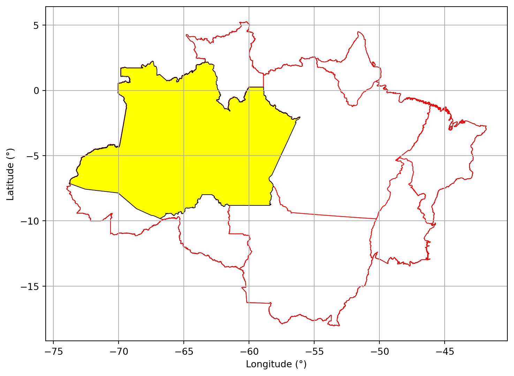

17 Análise do Estado do Amazonas.
17.1 Informações Gerais.
17.2 Glebas Federais na Unidade da Federação.
17.2.1 Área com Glebas Federais.

17.2.2 Área total de Glebas Federais no Estado do Amazonas: 392.756,11 km²
17.2.3 Percentual do Amazonas ocupado por Glebas Federais: 25,19 %
17.3 Florestas Públicas.
17.3.1 Florestas Públicas não destinadas.
Florestas Públicas do TIPO B (FPB) - São as florestas localizadas em áreas arrecadadas pelo Poder Público, mas que ainda não foram destinadas, de acordo com os dados baixados do Serviço Florestal Brasileiro.
fonte: Serviço Florestal Brasileiro

17.3.2 Área de Florestas Públicas não destinadas no Amazonas: 410.510,04 km²
17.3.3 Percentual do Amazonas ocupado por Florestas Públicas não destinadas : 26,33 %
17.4 Análise de Sobreposições.
As análises de sobreposições visam mostrar a sobreposição entre as classes de áreas públicas existentes para que possamos determinar se a relação é concorrente ou não. A análise será elaborada tendo as Glebas Federais como ponto pincipal sendo comparadas com Florestas Públicas não destinadas, Terras Indígenas, Unidades de Conservação e Projetos de Assentamento.
17.4.1 Glebas Federais sobrepostas a Florestas Públicas não destinadas.
17.4.1.1 Mapa Geral.

17.4.2 Glebas Federais com Floresta Pública não destinada.
/home/israel/miniconda3/lib/python3.10/site-packages/geopandas/geodataframe.py:2469: UserWarning: `keep_geom_type=True` in overlay resulted in 1254 dropped geometries of different geometry types than df1 has. Set `keep_geom_type=False` to retain all geometries
return geopandas.overlay(